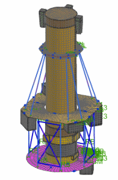

Setup
-
On your desktop or the appropriate network drive, create a folder named satellite.
-
Click the Download link below:
-
Extract the file to your satellite folder.
-
Start NX.
-
Open Hessi Satellite AFM.afm.

-
Open Solar Panels_assyfem1.afm